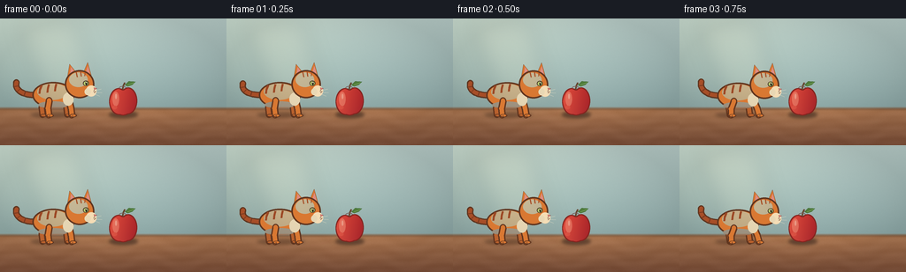
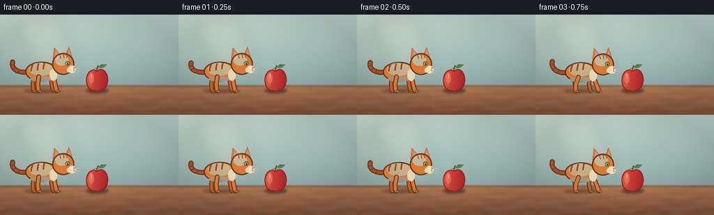
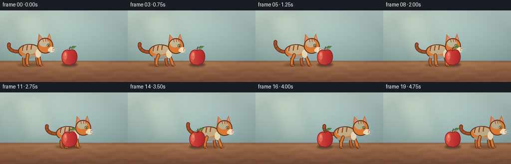
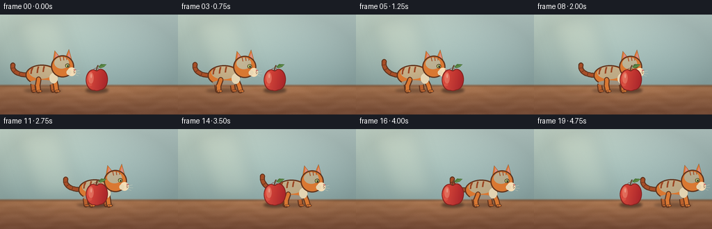
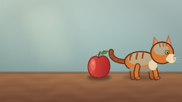
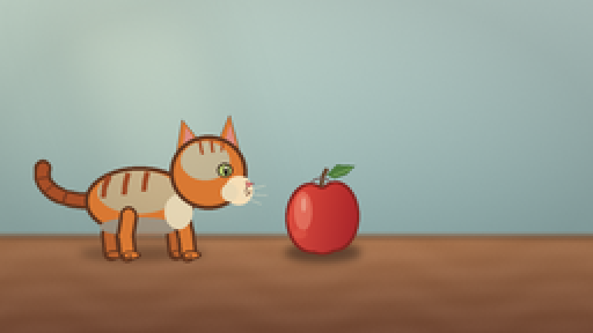
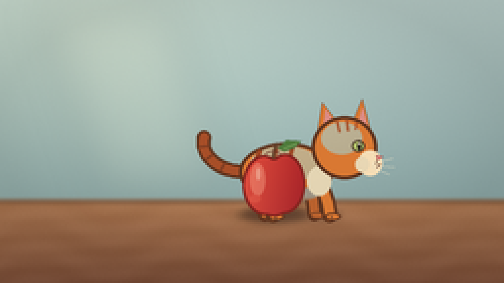
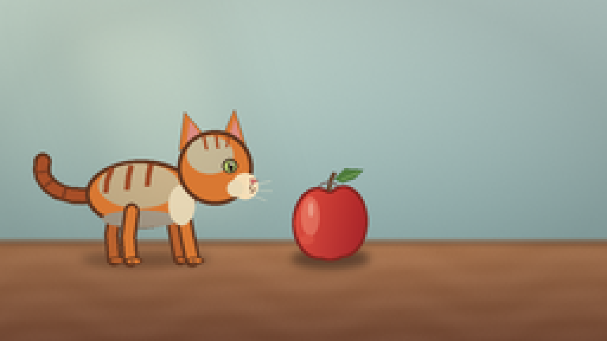
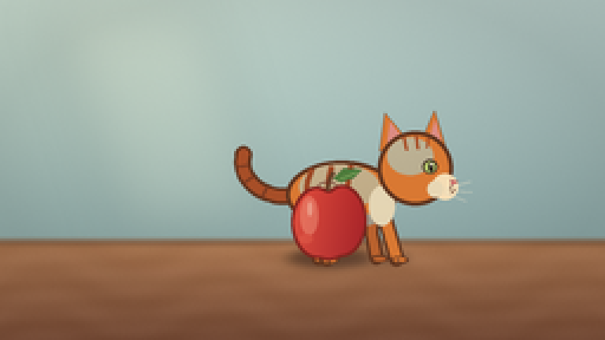

CODING AGENTS AS PIXEL WORLD MODELS
traex/DeepSeek-V4.1-Flash · instance_preservation_0006
点击播放 · 原生 RGB 像素
此结果可播放，但该运行尚未通过最终提交审核。页面展示不代表评测通过。
逐轮保存的候选
回放视频、检查图与代码变化。
每份候选均可单独播放。实际图片检查记录在下方工具轨迹中。
候选 01播放与检查图
点击播放 · 原生 RGB 像素


展开代码变化
--- 上一保存版本
+++ 本次保存版本
@@ -0,0 +1,484 @@
+from __future__ import annotations
+
+import math
+from pathlib import Path
+
+import numpy as np
+from PIL import Image, ImageColor, ImageDraw, ImageFilter
+
+import artifact_io
+
+
+CASE_DIR = Path(__file__).resolve().parent
+WIDTH, HEIGHT = 256, 144
+FRAMES = 20
+FPS = 4.0
+SCALE = 4
+
+WALL_TOP = ImageColor.getrgb("#b9ceca")
+WALL_BOTTOM = ImageColor.getrgb("#8eaaa9")
+TABLE_TOP = ImageColor.getrgb("#b47d55")
+TABLE_BOTTOM = ImageColor.getrgb("#80523b")
+
+ORANGE = "#d97832"
+ORANGE_LIGHT = "#f2a354"
+ORANGE_DARK = "#a74e27"
+ORANGE_FAR = "#b9612d"
+CAT_OUTLINE = "#60351f"
+CREAM = "#f5ddb5"
+PINK = "#df7c78"
+APPLE_RED = "#c9342e"
+APPLE_DARK = "#84241f"
+APPLE_LIGHT = "#eb6851"
+
+
+def color(value: str, alpha: int = 255) -> tuple[int, int, int, int]:
+ return (*ImageColor.getrgb(value), alpha)
+
+
+def box(values: tuple[float, float, float, float]) -> tuple[int, int, int, int]:
+ return tuple(round(value * SCALE) for value in values)
+
+
+def point(x: float, y: float) -> tuple[int, int]:
+ return round(x * SCALE), round(y * SCALE)
+
+
+def points(values: list[tuple[float, float]]) -> list[tuple[int, int]]:
+ return [point(x, y) for x, y in values]
+
+
+def lerp(a: float, b: float, t: float) -> float:
+ return a + (b - a) * t
+
+
+def smoothstep(t: float) -> float:
+ t = max(0.0, min(1.0, t))
+ return t * t * (3.0 - 2.0 * t)
+
+
+def make_background() -> Image.Image:
+ h, w = HEIGHT * SCALE, WIDTH * SCALE
+ yy, xx = np.mgrid[0:h, 0:w]
+ x = xx / max(1, w - 1)
+ y = yy / max(1, h - 1)
+
+ wall_t = np.clip(y / 0.73, 0.0, 1.0)[..., None]
+ wall = np.array(WALL_TOP)[None, None, :] * (1 - wall_t)
+ wall += np.array(WALL_BOTTOM)[None, None, :] * wall_t
+
+ # Soft morning light falls from the upper left.
+ light = np.exp(-(((x - 0.08) / 0.48) ** 2 + ((y - 0.02) / 0.58) ** 2))
+ wall += light[..., None] * np.array([22, 20, 11])[None, None, :]
+
+ table_t = np.clip((y - 0.705) / 0.295, 0.0, 1.0)[..., None]
+ table = np.array(TABLE_TOP)[None, None, :] * (1 - table_t)
+ table += np.array(TABLE_BOTTOM)[None, None, :] * table_t
+ grain = (
+ np.sin(yy * 0.086 + np.sin(xx * 0.021) * 2.1)
+ + 0.55 * np.sin(yy * 0.19 + xx * 0.008)
+ )
+ table += (grain * 3.0)[..., None]
+
+ blend = np.clip((y - 0.695) / 0.022, 0.0, 1.0)[..., None]
+ rgb = wall * (1.0 - blend) + table * blend
+
+ # Fine, deterministic surface texture keeps the flat areas from looking synthetic.
+ rng = np.random.default_rng(23)
+ noise = rng.normal(0.0, 1.0, (h, w, 1))
+ rgb += noise * (1.3 + 0.8 * blend)
+
+ vignette = np.clip(((x - 0.5) ** 2 + (y - 0.46) ** 2) * 0.42, 0.0, 0.11)
+ rgb *= 1.0 - vignette[..., None]
+ background = Image.fromarray(np.clip(rgb, 0, 255).astype(np.uint8), "RGB").convert("RGBA")
+
+ # A diffuse window-light shape adds depth without introducing another object.
+ glow = Image.new("RGBA", background.size, (0, 0, 0, 0))
+ gd = ImageDraw.Draw(glow)
+ gd.polygon(
+ points([(20, 3), (86, 3), (116, 97), (52, 101)]),
+ fill=(255, 241, 201, 25),
+ )
+ glow = glow.filter(ImageFilter.GaussianBlur(11 * SCALE))
+ background.alpha_composite(glow)
+
+ # The table lip gives the cat and apple a shared contact surface.
+ edge = Image.new("RGBA", background.size, (0, 0, 0, 0))
+ ed = ImageDraw.Draw(edge)
+ ed.rectangle(box((0, 101.5, WIDTH, 103.8)), fill=(67, 53, 44, 42))
+ ed.line(points([(0, 102.2), (WIDTH, 102.2)]), fill=(62, 44, 34, 76), width=2 * SCALE)
+ edge = edge.filter(ImageFilter.GaussianBlur(0.7 * SCALE))
+ background.alpha_composite(edge)
+
+ return background
+
+
+def make_apple() -> Image.Image:
+ layer = Image.new("RGBA", (WIDTH * SCALE, HEIGHT * SCALE), (0, 0, 0, 0))
+
+ mask = Image.new("L", layer.size, 0)
+ md = ImageDraw.Draw(mask)
+ md.ellipse(box((123.2, 79.0, 144.5, 109.3)), fill=255)
+ md.ellipse(box((134.5, 78.3, 155.1, 108.4)), fill=255)
+ md.ellipse(box((126.5, 85.0, 151.5, 110.0)), fill=255)
+
+ # Shade the apple with a stable left-to-right red gradient.
+ w, h = layer.size
+ yy, xx = np.mgrid[0:h, 0:w]
+ fx = np.clip((xx / SCALE - 122.0) / 35.0, 0.0, 1.0)
+ fy = np.clip((yy / SCALE - 76.0) / 36.0, 0.0, 1.0)
+ base = np.zeros((h, w, 4), dtype=np.float32)
+ base[..., 0] = lerp(231, 174, fx) - 16 * fy
+ base[..., 1] = lerp(81, 37, fx) - 6 * fy
+ base[..., 2] = lerp(62, 40, fx)
+ base[..., 3] = 255
+ fill = Image.fromarray(np.clip(base, 0, 255).astype(np.uint8), "RGBA")
+ layer.paste(fill, (0, 0), mask)
+
+ draw = ImageDraw.Draw(layer)
+
+ # Broad specular area and a small reflected light near the lower-left.
+ details = Image.new("RGBA", layer.size, (0, 0, 0, 0))
+ dd = ImageDraw.Draw(details)
+ dd.ellipse(box((127.0, 83.0, 134.6, 99.5)), fill=(255, 183, 151, 90))
+ dd.ellipse(box((130.0, 85.2, 132.0, 91.4)), fill=(255, 226, 198, 135))
+ dd.ellipse(box((126.7, 99.1, 132.2, 103.0)), fill=(247, 125, 96, 58))
+ details.putalpha(Image.composite(details.getchannel("A"), Image.new("L", layer.size, 0), mask))
+ layer.alpha_composite(details)
+
+ # Outline derived from the silhouette, so the three lobes read as one apple.
+ eroded = mask.filter(ImageFilter.MinFilter(9))
+ outline_mask = Image.fromarray(
+ np.clip(np.asarray(mask, dtype=np.int16) - np.asarray(eroded, dtype=np.int16), 0, 255).astype(np.uint8)
+ )
+ outline = Image.new("RGBA", layer.size, color(APPLE_DARK))
+ layer.paste(outline, (0, 0), outline_mask)
+
+ # Stem, leaf, and a tiny calyx shadow.
+ draw.line(
+ points([(138.5, 80.5), (139.2, 76.4), (141.0, 72.8)]),
+ fill=color("#583a25"),
+ width=round(1.7 * SCALE),
+ )
+ draw.line(
+ points([(138.8, 80.3), (139.4, 76.4), (141.0, 73.2)]),
+ fill=color("#765035"),
+ width=round(0.7 * SCALE),
+ )
+ draw.polygon(
+ points([(141.1, 75.4), (145.2, 71.3), (153.1, 71.7), (149.5, 75.2), (144.3, 77.1)]),
+ fill=color("#4f7c3c"),
+ outline=color("#345c2e"),
+ )
+ draw.line(
+ points([(144.0, 75.7), (151.2, 72.8)]),
+ fill=color("#7da65d"),
+ width=round(0.65 * SCALE),
+ )
+ draw.arc(box((133.8, 76.7, 143.2, 83.0)), 205, 332, fill=(89, 31, 26, 150), width=round(0.8 * SCALE))
+
+ return layer
+
+
+def cubic_bezier(
+ p0: tuple[float, float],
+ p1: tuple[float, float],
+ p2: tuple[float, float],
+ p3: tuple[float, float],
+ count: int = 18,
+) -> list[tuple[float, float]]:
+ result = []
+ for i in range(count):
+ t = i / (count - 1)
+ u = 1.0 - t
+ x = u**3 * p0[0] + 3 * u * u * t * p1[0] + 3 * u * t * t * p2[0] + t**3 * p3[0]
+ y = u**3 * p0[1] + 3 * u * u * t * p1[1] + 3 * u * t * t * p2[1] + t**3 * p3[1]
+ result.append((x, y))
+ return result
+
+
+def draw_limb(
+ draw: ImageDraw.ImageDraw,
+ hip: tuple[float, float],
+ knee: tuple[float, float],
+ foot: tuple[float, float],
+ fill: str,
+ near: bool,
+) -> None:
+ limb = [hip, knee, foot]
+ draw.line(points(limb), fill=color(CAT_OUTLINE), width=round((8.0 if near else 7.4) * SCALE), joint="curve")
+ for x, y in limb:
+ radius = (3.7 if near else 3.3) * SCALE
+ draw.ellipse((x * SCALE - radius, y * SCALE - radius, x * SCALE + radius, y * SCALE + radius), fill=color(CAT_OUTLINE))
+ draw.line(points(limb), fill=color(fill), width=round((5.1 if near else 4.6) * SCALE), joint="curve")
+ for x, y in limb:
+ radius = (2.4 if near else 2.0) * SCALE
+ draw.ellipse((x * SCALE - radius, y * SCALE - radius, x * SCALE + radius, y * SCALE + radius), fill=color(fill))
+
+ paw = (foot[0] + 1.3, foot[1] + 0.4)
+ draw.ellipse(box((paw[0] - 3.8, paw[1] - 1.7, paw[0] + 4.4, paw[1] + 1.9)), fill=color(CAT_OUTLINE))
+ draw.ellipse(box((paw[0] - 2.9, paw[1] - 1.0, paw[0] + 3.3, paw[1] + 1.2)), fill=color(fill))
+ if near:
+ draw.line(points([(paw[0] - 0.5, paw[1] - 0.3), (paw[0] - 0.3, paw[1] + 1.1)]), fill=color("#7e4225", 150), width=SCALE)
+
+
+def draw_tail(
+ draw: ImageDraw.ImageDraw,
+ cx: float,
+ bob: float,
+ sway: float,
+) -> None:
+ root = (cx - 22.5, 86.5 + bob)
+ curve = cubic_bezier(
+ root,
+ (cx - 36.0, 88.0 + bob),
+ (cx - 48.0, 80.0 + bob + sway),
+ (cx - 45.5, 70.5 + bob + sway * 1.25),
+ 20,
+ )
+ draw.line(points(curve), fill=color(CAT_OUTLINE), width=round(7.2 * SCALE), joint="curve")
+ for x, y in (curve[0], curve[-1]):
+ r = 3.6 * SCALE
+ draw.ellipse((x * SCALE - r, y * SCALE - r, x * SCALE + r, y * SCALE + r), fill=color(CAT_OUTLINE))
+ draw.line(points(curve), fill=color(ORANGE_DARK), width=round(4.5 * SCALE), joint="curve")
+ for x, y in (curve[0], curve[-1]):
+ r = 2.25 * SCALE
+ draw.ellipse((x * SCALE - r, y * SCALE - r, x * SCALE + r, y * SCALE + r), fill=color(ORANGE_DARK))
+
+ # Three broken bands follow the curve of the tail.
+ for index in (7, 12, 16):
+ x, y = curve[index]
+ x2, y2 = curve[index + 1]
+ dx, dy = x2 - x, y2 - y
+ norm = max(1e-6, math.hypot(dx, dy))
+ nx, ny = -dy / norm, dx / norm
+ draw.line(
+ points([(x - nx * 2.5, y - ny * 2.5), (x + nx * 2.5, y + ny * 2.5)]),
+ fill=color("#7b3b21"),
+ width=round(1.3 * SCALE),
+ )
+
+
+def draw_cat(cx: float, phase: float, walk_amount: float, tail_sway: float) -> Image.Image:
+ layer = Image.new("RGBA", (WIDTH * SCALE, HEIGHT * SCALE), (0, 0, 0, 0))
+ draw = ImageDraw.Draw(layer)
+
+ bob = 0.85 * abs(math.sin(phase * 2.0)) * walk_amount
+ swing = 3.6 * math.sin(phase) * walk_amount
+ y = 0.0 + bob
+ draw_tail(draw, cx, y, tail_sway)
+
+ # Far legs are intentionally a little darker and narrower.
+ draw_limb(
+ draw,
+ (cx - 15.0, 92.5 + y),
+ (cx - 17.0 + swing, 101.5 + y),
+ (cx - 16.0 + swing, 109.5),
+ ORANGE_FAR,
+ False,
+ )
+ draw_limb(
+ draw,
+ (cx + 9.0, 92.0 + y),
+ (cx + 11.0 - swing, 101.0 + y),
+ (cx + 12.0 - swing, 109.2),
+ ORANGE_FAR,
+ False,
+ )
+
+ body_box = box((cx - 27.5, 72.0 + y, cx + 20.0, 101.8 + y))
+ draw.ellipse(body_box, fill=color(ORANGE), outline=color(CAT_OUTLINE), width=round(1.8 * SCALE))
+ draw.ellipse(
+ box((cx - 22.0, 73.7 + y, cx + 13.0, 92.2 + y)),
+ fill=color(ORANGE_LIGHT, 112),
+ )
+ draw.ellipse(
+ box((cx - 21.0, 94.0 + y, cx + 13.0, 102.0 + y)),
+ fill=color("#bd5d2c", 76),
+ )
+
+ # Near legs sit in front of the body.
+ draw_limb(
+ draw,
+ (cx - 8.5, 93.0 + y),
+ (cx - 10.0 - swing * 0.7, 102.0 + y),
+ (cx - 9.0 - swing, 109.7),
+ ORANGE,
+ True,
+ )
+ draw_limb(
+ draw,
+ (cx + 14.0, 93.2 + y),
+ (cx + 16.0 + swing * 0.7, 101.8 + y),
+ (cx + 17.0 + swing, 109.6),
+ ORANGE,
+ True,
+ )
+
+ # Tabby stripes on the flank.
+ for x0, x1, y0, y1 in [
+ (cx - 17.0, cx - 19.5, 76.0, 85.3),
+ (cx - 8.7, cx - 10.5, 74.7, 84.0),
+ (cx - 0.5, cx - 2.0, 74.3, 82.5),
+ ]:
+ draw.line(
+ points([(x0, y0 + y), (x1 + 0.5, (y0 + y1) * 0.5 + y), (x1, y1 + y)]),
+ fill=color("#9c4724"),
+ width=round(2.15 * SCALE),
+ joint="curve",
+ )
+
+ # Cream chest/neck patch.
+ draw.ellipse(
+ box((cx + 7.0, 84.0 + y, cx + 19.0, 99.0 + y)),
+ fill=color(CREAM, 210),
+ )
+
+ # Ears go behind the head silhouette.
+ draw.polygon(
+ points([(cx + 12.0, 67.0 + y), (cx + 14.5, 51.7 + y), (cx + 23.0, 62.3 + y)]),
+ fill=color(ORANGE),
+ outline=color(CAT_OUTLINE),
+ )
+ draw.polygon(
+ points([(cx + 15.0, 63.6 + y), (cx + 16.3, 55.0 + y), (cx + 21.0, 61.7 + y)]),
+ fill=color("#dc8b82"),
+ )
+ draw.polygon(
+ points([(cx + 30.0, 61.5 + y), (cx + 35.0, 49.8 + y), (cx + 39.2, 65.3 + y)]),
+ fill=color(ORANGE),
+ outline=color(CAT_OUTLINE),
+ )
+ draw.polygon(
+ points([(cx + 33.0, 61.1 + y), (cx + 35.2, 54.1 + y), (cx + 37.7, 63.1 + y)]),
+ fill=color("#dc8b82"),
+ )
+
+ head_box = box((cx + 9.2, 58.5 + y, cx + 42.5, 90.5 + y))
+ draw.ellipse(head_box, fill=color(ORANGE), outline=color(CAT_OUTLINE), width=round(1.8 * SCALE))
+ draw.ellipse(box((cx + 14.0, 61.3 + y, cx + 35.0, 77.8 + y)), fill=color(ORANGE_LIGHT, 88))
+
+ # Forehead markings.
+ draw.line(
+ points([(cx + 22.0, 60.8 + y), (cx + 23.2, 66.4 + y)]),
+ fill=color("#a64b24"),
+ width=round(1.35 * SCALE),
+ )
+ draw.line(
+ points([(cx + 27.0, 60.4 + y), (cx + 27.7, 65.8 + y)]),
+ fill=color("#a64b24"),
+ width=round(1.35 * SCALE),
+ )
+ draw.line(
+ points([(cx + 32.0, 61.3 + y), (cx + 31.5, 65.2 + y)]),
+ fill=color("#a64b24"),
+ width=round(1.1 * SCALE),
+ )
+
+ # Muzzle and cheek.
+ draw.ellipse(box((cx + 33.0, 76.0 + y, cx + 45.0, 88.6 + y)), fill=color(CREAM))
+ draw.ellipse(box((cx + 31.5, 79.2 + y, cx + 38.5, 87.0 + y)), fill=color(CREAM, 220))
+
+ # Single visible eye, with a warm green iris and dark vertical pupil.
+ draw.ellipse(box((cx + 29.8, 70.6 + y, cx + 36.2, 76.6 + y)), fill=color("#3f2e22"))
+ draw.ellipse(box((cx + 30.6, 71.3 + y, cx + 35.5, 76.0 + y)), fill=color("#b5c66b"))
+ draw.ellipse(box((cx + 32.4, 71.5 + y, cx + 34.4, 75.8 + y)), fill=color("#302b22"))
+ draw.ellipse(box((cx + 33.0, 72.0 + y, cx + 34.0, 73.0 + y)), fill=color("#f9f2d2"))
+
+ # Nose and mouth profile.
+ draw.polygon(
+ points([(cx + 42.0, 78.5 + y), (cx + 45.5, 79.2 + y), (cx + 42.4, 81.0 + y)]),
+ fill=color(PINK),
+ outline=color("#7d3b39"),
+ )
+ draw.arc(box((cx + 40.2, 80.1 + y, cx + 44.0, 84.6 + y)), 5, 88, fill=color("#6f442f"), width=round(0.65 * SCALE))
+ draw.line(
+ points([(cx + 42.2, 81.2 + y), (cx + 42.1, 83.0 + y)]),
+ fill=color("#6f442f"),
+ width=round(0.65 * SCALE),
+ )
+
+ # Whiskers stay thin enough to read as detail rather than extra geometry.
+ for start, end in [
+ ((cx + 40.0, 82.4 + y), (cx + 50.3, 79.9 + y)),
+ ((cx + 40.1, 83.5 + y), (cx + 51.0, 84.3 + y)),
+ ((cx + 39.7, 84.5 + y), (cx + 48.5, 88.0 + y)),
+ ]:
+ draw.line(points([start, end]), fill=color("#f4e7ca", 205), width=round(0.55 * SCALE))
+
+ return layer
+
+
+def make_shadow(cx: float | None = None) -> Image.Image:
+ layer = Image.new("RGBA", (WIDTH * SCALE, HEIGHT * SCALE), (0, 0, 0, 0))
+ draw = ImageDraw.Draw(layer)
+ if cx is not None:
+ draw.ellipse(box((cx - 31.0, 106.8, cx + 23.0, 112.0)), fill=(53, 36, 29, 90))
+ draw.ellipse(box((123.5, 105.8, 155.2, 112.4)), fill=(52, 34, 28, 92))
+ return layer.filter(ImageFilter.GaussianBlur(1.8 * SCALE))
+
+
+def cat_position(frame_index: int) -> float:
+ positions = [
+ 64.0,
+ 64.0,
+ 65.0,
+ 70.0,
+ 77.0,
+ 86.0,
+ 95.0,
+ 104.0,
+ 113.0,
+ 122.0,
+ 131.0,
+ 140.0,
+ 149.0,
+ 158.0,
+ 167.0,
+ 176.0,
+ 184.0,
+ 192.0,
+ 198.0,
+ 202.0,
+ ]
+ return positions[frame_index]
+
+
+def render_frames() -> list[np.ndarray]:
+ background = make_background()
+ apple = make_apple()
+ static_apple_shadow = make_shadow()
+ frames: list[np.ndarray] = []
+
+ for index in range(FRAMES):
+ cx = cat_position(index)
+ previous = cat_position(max(0, index - 1))
+ following = cat_position(min(FRAMES - 1, index + 1))
+ speed = abs(following - previous) * 0.5
+ walk_amount = smoothstep(speed / 7.0)
+
+ # The phase is tied to distance travelled, avoiding foot sliding.
+ phase = (cx - 64.0) / 16.8 * math.tau
+ tail_sway = 2.8 * math.sin(index / FPS * math.tau * 0.48 + 0.7)
+
+ frame = background.copy()
+ frame.alpha_composite(static_apple_shadow)
+ cat_shadow = make_shadow(cx + 1.5)
+ frame.alpha_composite(cat_shadow)
+ frame.alpha_composite(draw_cat(cx, phase, walk_amount, tail_sway))
+ frame.alpha_composite(apple)
+
+ rgb = frame.convert("RGB").resize((WIDTH, HEIGHT), Image.Resampling.LANCZOS)
+ frames.append(np.asarray(rgb, dtype=np.uint8))
+
+ return frames
+
+
+def main() -> None:
+ frames = render_frames()
+ artifact_io.save(frames, CASE_DIR)
+ print(f"Saved {len(frames)} RGB frames at {WIDTH}x{HEIGHT}, {FPS:g} fps")
+
+
+if __name__ == "__main__":
+ main()
候选 02播放与检查图
点击播放 · 原生 RGB 像素

展开代码变化
--- 上一保存版本
+++ 本次保存版本
@@ -206,18 +206,18 @@
near: bool,
) -> None:
limb = [hip, knee, foot]
- draw.line(points(limb), fill=color(CAT_OUTLINE), width=round((8.0 if near else 7.4) * SCALE), joint="curve")
+ draw.line(points(limb), fill=color(CAT_OUTLINE), width=round((6.8 if near else 6.3) * SCALE), joint="curve")
for x, y in limb:
- radius = (3.7 if near else 3.3) * SCALE
+ radius = (3.2 if near else 2.9) * SCALE
draw.ellipse((x * SCALE - radius, y * SCALE - radius, x * SCALE + radius, y * SCALE + radius), fill=color(CAT_OUTLINE))
- draw.line(points(limb), fill=color(fill), width=round((5.1 if near else 4.6) * SCALE), joint="curve")
+ draw.line(points(limb), fill=color(fill), width=round((4.2 if near else 3.8) * SCALE), joint="curve")
for x, y in limb:
- radius = (2.4 if near else 2.0) * SCALE
+ radius = (2.0 if near else 1.7) * SCALE
draw.ellipse((x * SCALE - radius, y * SCALE - radius, x * SCALE + radius, y * SCALE + radius), fill=color(fill))
- paw = (foot[0] + 1.3, foot[1] + 0.4)
- draw.ellipse(box((paw[0] - 3.8, paw[1] - 1.7, paw[0] + 4.4, paw[1] + 1.9)), fill=color(CAT_OUTLINE))
- draw.ellipse(box((paw[0] - 2.9, paw[1] - 1.0, paw[0] + 3.3, paw[1] + 1.2)), fill=color(fill))
+ paw = (foot[0] + 1.1, foot[1] + 0.25)
+ draw.ellipse(box((paw[0] - 3.5, paw[1] - 1.35, paw[0] + 3.9, paw[1] + 1.55)), fill=color(CAT_OUTLINE))
+ draw.ellipse(box((paw[0] - 2.7, paw[1] - 0.8, paw[0] + 3.0, paw[1] + 0.95)), fill=color(fill))
if near:
draw.line(points([(paw[0] - 0.5, paw[1] - 0.3), (paw[0] - 0.3, paw[1] + 1.1)]), fill=color("#7e4225", 150), width=SCALE)
@@ -228,12 +228,12 @@
bob: float,
sway: float,
) -> None:
- root = (cx - 22.5, 86.5 + bob)
+ root = (cx - 23.0, 82.0 + bob)
curve = cubic_bezier(
root,
- (cx - 36.0, 88.0 + bob),
- (cx - 48.0, 80.0 + bob + sway),
- (cx - 45.5, 70.5 + bob + sway * 1.25),
+ (cx - 37.0, 85.0 + bob),
+ (cx - 49.0, 76.0 + bob + sway),
+ (cx - 46.0, 66.0 + bob + sway * 1.25),
20,
)
draw.line(points(curve), fill=color(CAT_OUTLINE), width=round(7.2 * SCALE), joint="curve")
@@ -264,52 +264,52 @@
draw = ImageDraw.Draw(layer)
bob = 0.85 * abs(math.sin(phase * 2.0)) * walk_amount
- swing = 3.6 * math.sin(phase) * walk_amount
+ swing = 4.8 * math.sin(phase) * walk_amount
y = 0.0 + bob
draw_tail(draw, cx, y, tail_sway)
# Far legs are intentionally a little darker and narrower.
draw_limb(
draw,
- (cx - 15.0, 92.5 + y),
- (cx - 17.0 + swing, 101.5 + y),
+ (cx - 15.0, 87.5 + y),
+ (cx - 17.0 + swing, 99.0 + y),
(cx - 16.0 + swing, 109.5),
ORANGE_FAR,
False,
)
draw_limb(
draw,
- (cx + 9.0, 92.0 + y),
- (cx + 11.0 - swing, 101.0 + y),
+ (cx + 8.0, 87.0 + y),
+ (cx + 10.0 - swing, 98.5 + y),
(cx + 12.0 - swing, 109.2),
ORANGE_FAR,
False,
)
- body_box = box((cx - 27.5, 72.0 + y, cx + 20.0, 101.8 + y))
+ body_box = box((cx - 28.0, 67.5 + y, cx + 19.0, 96.2 + y))
draw.ellipse(body_box, fill=color(ORANGE), outline=color(CAT_OUTLINE), width=round(1.8 * SCALE))
draw.ellipse(
- box((cx - 22.0, 73.7 + y, cx + 13.0, 92.2 + y)),
+ box((cx - 22.5, 69.0 + y, cx + 11.5, 87.8 + y)),
fill=color(ORANGE_LIGHT, 112),
)
draw.ellipse(
- box((cx - 21.0, 94.0 + y, cx + 13.0, 102.0 + y)),
+ box((cx - 21.0, 88.8 + y, cx + 11.0, 96.0 + y)),
fill=color("#bd5d2c", 76),
)
# Near legs sit in front of the body.
draw_limb(
draw,
- (cx - 8.5, 93.0 + y),
- (cx - 10.0 - swing * 0.7, 102.0 + y),
+ (cx - 8.5, 89.0 + y),
+ (cx - 10.0 - swing * 0.7, 100.0 + y),
(cx - 9.0 - swing, 109.7),
ORANGE,
True,
)
draw_limb(
draw,
- (cx + 14.0, 93.2 + y),
- (cx + 16.0 + swing * 0.7, 101.8 + y),
+ (cx + 13.0, 89.2 + y),
+ (cx + 15.0 + swing * 0.7, 100.2 + y),
(cx + 17.0 + swing, 109.6),
ORANGE,
True,
@@ -317,9 +317,9 @@
# Tabby stripes on the flank.
for x0, x1, y0, y1 in [
- (cx - 17.0, cx - 19.5, 76.0, 85.3),
- (cx - 8.7, cx - 10.5, 74.7, 84.0),
- (cx - 0.5, cx - 2.0, 74.3, 82.5),
+ (cx - 17.0, cx - 19.5, 71.0, 81.3),
+ (cx - 8.7, cx - 10.5, 69.7, 80.0),
+ (cx - 0.5, cx - 2.0, 69.3, 78.5),
]:
draw.line(
points([(x0, y0 + y), (x1 + 0.5, (y0 + y1) * 0.5 + y), (x1, y1 + y)]),
@@ -330,79 +330,79 @@
# Cream chest/neck patch.
draw.ellipse(
- box((cx + 7.0, 84.0 + y, cx + 19.0, 99.0 + y)),
+ box((cx + 7.0, 78.0 + y, cx + 18.0, 95.0 + y)),
fill=color(CREAM, 210),
)
# Ears go behind the head silhouette.
draw.polygon(
- points([(cx + 12.0, 67.0 + y), (cx + 14.5, 51.7 + y), (cx + 23.0, 62.3 + y)]),
+ points([(cx + 11.5, 63.5 + y), (cx + 13.7, 47.2 + y), (cx + 23.5, 58.7 + y)]),
fill=color(ORANGE),
outline=color(CAT_OUTLINE),
)
draw.polygon(
- points([(cx + 15.0, 63.6 + y), (cx + 16.3, 55.0 + y), (cx + 21.0, 61.7 + y)]),
+ points([(cx + 14.8, 60.2 + y), (cx + 15.9, 51.0 + y), (cx + 21.2, 58.0 + y)]),
fill=color("#dc8b82"),
)
draw.polygon(
- points([(cx + 30.0, 61.5 + y), (cx + 35.0, 49.8 + y), (cx + 39.2, 65.3 + y)]),
+ points([(cx + 29.0, 59.5 + y), (cx + 34.7, 46.2 + y), (cx + 39.7, 62.3 + y)]),
fill=color(ORANGE),
outline=color(CAT_OUTLINE),
)
draw.polygon(
- points([(cx + 33.0, 61.1 + y), (cx + 35.2, 54.1 + y), (cx + 37.7, 63.1 + y)]),
+ points([(cx + 32.6, 58.2 + y), (cx + 35.0, 50.2 + y), (cx + 37.9, 60.7 + y)]),
fill=color("#dc8b82"),
)
- head_box = box((cx + 9.2, 58.5 + y, cx + 42.5, 90.5 + y))
+ head_box = box((cx + 10.7, 55.0 + y, cx + 42.4, 86.5 + y))
draw.ellipse(head_box, fill=color(ORANGE), outline=color(CAT_OUTLINE), width=round(1.8 * SCALE))
- draw.ellipse(box((cx + 14.0, 61.3 + y, cx + 35.0, 77.8 + y)), fill=color(ORANGE_LIGHT, 88))
+ draw.ellipse(box((cx + 14.8, 57.6 + y, cx + 34.2, 73.3 + y)), fill=color(ORANGE_LIGHT, 88))
# Forehead markings.
draw.line(
- points([(cx + 22.0, 60.8 + y), (cx + 23.2, 66.4 + y)]),
+ points([(cx + 21.8, 57.2 + y), (cx + 23.1, 63.0 + y)]),
fill=color("#a64b24"),
width=round(1.35 * SCALE),
)
draw.line(
- points([(cx + 27.0, 60.4 + y), (cx + 27.7, 65.8 + y)]),
+ points([(cx + 27.0, 56.9 + y), (cx + 27.7, 62.4 + y)]),
fill=color("#a64b24"),
width=round(1.35 * SCALE),
)
draw.line(
- points([(cx + 32.0, 61.3 + y), (cx + 31.5, 65.2 + y)]),
+ points([(cx + 32.0, 57.7 + y), (cx + 31.5, 61.9 + y)]),
fill=color("#a64b24"),
width=round(1.1 * SCALE),
)
# Muzzle and cheek.
- draw.ellipse(box((cx + 33.0, 76.0 + y, cx + 45.0, 88.6 + y)), fill=color(CREAM))
- draw.ellipse(box((cx + 31.5, 79.2 + y, cx + 38.5, 87.0 + y)), fill=color(CREAM, 220))
+ draw.ellipse(box((cx + 33.7, 73.0 + y, cx + 44.8, 84.0 + y)), fill=color(CREAM))
+ draw.ellipse(box((cx + 31.8, 75.9 + y, cx + 38.6, 83.0 + y)), fill=color(CREAM, 220))
# Single visible eye, with a warm green iris and dark vertical pupil.
- draw.ellipse(box((cx + 29.8, 70.6 + y, cx + 36.2, 76.6 + y)), fill=color("#3f2e22"))
- draw.ellipse(box((cx + 30.6, 71.3 + y, cx + 35.5, 76.0 + y)), fill=color("#b5c66b"))
- draw.ellipse(box((cx + 32.4, 71.5 + y, cx + 34.4, 75.8 + y)), fill=color("#302b22"))
- draw.ellipse(box((cx + 33.0, 72.0 + y, cx + 34.0, 73.0 + y)), fill=color("#f9f2d2"))
+ draw.ellipse(box((cx + 29.8, 67.0 + y, cx + 36.0, 73.0 + y)), fill=color("#3f2e22"))
+ draw.ellipse(box((cx + 30.6, 67.7 + y, cx + 35.3, 72.4 + y)), fill=color("#b5c66b"))
+ draw.ellipse(box((cx + 32.3, 67.9 + y, cx + 34.3, 72.2 + y)), fill=color("#302b22"))
+ draw.ellipse(box((cx + 32.9, 68.4 + y, cx + 33.9, 69.4 + y)), fill=color("#f9f2d2"))
# Nose and mouth profile.
draw.polygon(
- points([(cx + 42.0, 78.5 + y), (cx + 45.5, 79.2 + y), (cx + 42.4, 81.0 + y)]),
+ points([(cx + 41.4, 75.4 + y), (cx + 44.8, 76.1 + y), (cx + 41.9, 77.8 + y)]),
fill=color(PINK),
outline=color("#7d3b39"),
)
- draw.arc(box((cx + 40.2, 80.1 + y, cx + 44.0, 84.6 + y)), 5, 88, fill=color("#6f442f"), width=round(0.65 * SCALE))
- draw.line(
- points([(cx + 42.2, 81.2 + y), (cx + 42.1, 83.0 + y)]),
+ draw.arc(box((cx + 39.8, 76.9 + y, cx + 43.4, 81.2 + y)), 5, 88, fill=color("#6f442f"), width=round(0.65 * SCALE))
+ draw.line(
+ points([(cx + 41.7, 77.9 + y), (cx + 41.6, 79.7 + y)]),
fill=color("#6f442f"),
width=round(0.65 * SCALE),
)
# Whiskers stay thin enough to read as detail rather than extra geometry.
for start, end in [
- ((cx + 40.0, 82.4 + y), (cx + 50.3, 79.9 + y)),
- ((cx + 40.1, 83.5 + y), (cx + 51.0, 84.3 + y)),
- ((cx + 39.7, 84.5 + y), (cx + 48.5, 88.0 + y)),
+ ((cx + 39.6, 78.8 + y), (cx + 49.9, 76.2 + y)),
+ ((cx + 39.7, 79.9 + y), (cx + 50.5, 80.6 + y)),
+ ((cx + 39.3, 80.9 + y), (cx + 48.0, 84.4 + y)),
]:
draw.line(points([start, end]), fill=color("#f4e7ca", 205), width=round(0.55 * SCALE))
候选 03播放与检查图
点击播放 · 原生 RGB 像素

展开代码变化
--- 上一保存版本
+++ 本次保存版本
@@ -3,6 +3,7 @@
import math
from pathlib import Path
+import imageio_ffmpeg
import numpy as np
from PIL import Image, ImageColor, ImageDraw, ImageFilter
@@ -90,7 +91,7 @@
vignette = np.clip(((x - 0.5) ** 2 + (y - 0.46) ** 2) * 0.42, 0.0, 0.11)
rgb *= 1.0 - vignette[..., None]
- background = Image.fromarray(np.clip(rgb, 0, 255).astype(np.uint8), "RGB").convert("RGBA")
+ background = Image.fromarray(np.clip(rgb, 0, 255).astype(np.uint8)).convert("RGBA")
# A diffuse window-light shape adds depth without introducing another object.
glow = Image.new("RGBA", background.size, (0, 0, 0, 0))
@@ -132,7 +133,7 @@
base[..., 1] = lerp(81, 37, fx) - 6 * fy
base[..., 2] = lerp(62, 40, fx)
base[..., 3] = 255
- fill = Image.fromarray(np.clip(base, 0, 255).astype(np.uint8), "RGBA")
+ fill = Image.fromarray(np.clip(base, 0, 255).astype(np.uint8), mode="RGBA")
layer.paste(fill, (0, 0), mask)
draw = ImageDraw.Draw(layer)
@@ -474,9 +475,25 @@
return frames
+def save_mp4(frames: list[np.ndarray]) -> None:
+ writer = imageio_ffmpeg.write_frames(
+ str(CASE_DIR / "video.mp4"),
+ (WIDTH, HEIGHT),
+ fps=FPS,
+ codec="libx264",
+ pix_fmt="yuv420p",
+ output_params=["-crf", "16", "-movflags", "+faststart"],
+ )
+ writer.send(None)
+ for frame in frames:
+ writer.send(frame.tobytes())
+ writer.close()
+
+
def main() -> None:
frames = render_frames()
artifact_io.save(frames, CASE_DIR)
+ save_mp4(frames)
print(f"Saved {len(frames)} RGB frames at {WIDTH}x{HEIGHT}, {FPS:g} fps")
候选 04播放与检查图
点击播放 · 原生 RGB 像素


展开代码变化
--- 上一保存版本
+++ 本次保存版本
@@ -481,7 +481,7 @@
(WIDTH, HEIGHT),
fps=FPS,
codec="libx264",
- pix_fmt="yuv420p",
+ pix_fmt_out="yuv420p",
output_params=["-crf", "16", "-movflags", "+faststart"],
)
writer.send(None)
候选 05播放与检查图
点击播放 · 原生 RGB 像素

展开代码变化
--- 上一保存版本
+++ 本次保存版本
@@ -133,7 +133,7 @@
base[..., 1] = lerp(81, 37, fx) - 6 * fy
base[..., 2] = lerp(62, 40, fx)
base[..., 3] = 255
- fill = Image.fromarray(np.clip(base, 0, 255).astype(np.uint8), mode="RGBA")
+ fill = Image.fromarray(np.clip(base, 0, 255).astype(np.uint8))
layer.paste(fill, (0, 0), mask)
draw = ImageDraw.Draw(layer)
可观测工具轨迹
实际执行的命令与返回图片。
命令 1exit 0
/bin/bash -c "pwd && rg --files -g '"'!*node_modules*'"' -g '"'!*.mp4'"' | sort | sed -n '1,200p'"
命令 2exit 0
/bin/bash -c "printf '%s\\n' '--- prompt.txt ---'; sed -n '1,240p' prompt.txt; printf '%s\\n' '--- GENERATION_RULES.md ---'; sed -n '1,320p' GENERATION_RULES.md; printf '%s\\n' '--- task_spec.json ---'; cat task_spec.json"
命令 3exit 0
/bin/bash -c "find . -maxdepth 3 -type f -printf '%p\\t%k KB\\n' | sort | sed -n '1,240p'; printf '%s\\n' '--- tools ---'; command -v ffmpeg || true; command -v ffprobe || true; command -v python3 || true; command -v convert || true; command -v magick || true"
命令 4exit 0
/bin/bash -c "sed -n '1,260p' artifact_io.py"
命令 5exit 0
/bin/bash -c "sed -n '1,300p' player_template.html"
命令 6exit 0
/bin/bash -c "python3 - <<'PY' import importlib.util for m in ['numpy','PIL','imageio','cv2','matplotlib','scipy']: print(m, bool(importlib.util.find_spec(m))) PY"
命令 7exit 0
/bin/bash -c 'python3 generate.py'
命令 8exit 1
/bin/bash -c "python3 - <<'PY'
from PIL import Image
for n in ['00','07','12','19']:
im=Image.open(f'frames/{n}.png')
im.resize((1024,576),Image.Resampling.NEAREST).save(f'/tmp/frame_{n}_zoom.png')
PY"命令 9exit 0
/bin/bash -c "mkdir -p .tmp/zoom && python3 - <<'PY'
from PIL import Image
for n in ['00','07','12','19']:
im=Image.open(f'frames/{n}.png')
im.resize((1024,576),Image.Resampling.NEAREST).save(f'.tmp/zoom/frame_{n}.png')
PY"命令 10exit 0
/bin/bash -c "python3 generate.py && python3 - <<'PY'
from PIL import Image
for n in ['00','07','12','19']:
Image.open(f'frames/{n}.png').resize((1024,576),Image.Resampling.NEAREST).save(f'.tmp/zoom/frame_{n}.png')
PY"命令 11exit 0
/bin/bash -c "python3 - <<'PY'
import importlib.util
print('imageio_ffmpeg', bool(importlib.util.find_spec('imageio_ffmpeg')))
if importlib.util.find_spec('imageio_ffmpeg'):
import imageio_ffmpeg
print(imageio_ffmpeg.get_ffmpeg_exe())
PY"命令 12exit 0
/bin/bash -c "python3 - <<'PY'
import json
from pathlib import Path
import numpy as np
from PIL import Image
spec=json.loads(Path('task_spec.json').read_text())
with np.load('pixels.npz') as z:
p=z['pixels']
print('npz',p.shape,p.dtype,'frames',len(list(Path('frames').glob('*.png'))))
print('spec',spec)
for n in ('00','19'):
im=np.asarray(Image.open(f'frames/{n}.png'))
print(n,im.shape,im.dtype)
print('index',Path('index.html').stat().st_size,'bytes')
PY"命令 13exit 0
/bin/bash -c "git status --short 2>/dev/null || true; find frames -maxdepth 1 -type f -printf '%f\\n' | sort | tail -5"
命令 14exit 1
/bin/bash -c "python3 generate.py && python3 - <<'PY' import imageio_ffmpeg, subprocess ff=imageio_ffmpeg.get_ffmpeg_exe() subprocess.run([ff,'-hide_banner','-i','video.mp4','-f','null','-'],check=True) PY"
命令 15exit 0
/bin/bash -c "python3 - <<'PY' import imageio_ffmpeg, inspect print(inspect.signature(imageio_ffmpeg.write_frames)) print(imageio_ffmpeg.write_frames.__doc__[:2500]) PY"
命令 16exit 0
/bin/bash -c "python3 generate.py && python3 - <<'PY' import imageio_ffmpeg, subprocess ff=imageio_ffmpeg.get_ffmpeg_exe() r=subprocess.run([ff,'-hide_banner','-i','video.mp4','-f','null','-'],text=True,capture_output=True) print(r.stderr[-2400:]) raise SystemExit(r.returncode) PY"
命令 17exit 0
/bin/bash -c "python3 - <<'PY'
from PIL import Image
from pathlib import Path
import hashlib, numpy as np
files=sorted(Path('frames').glob('*.png'))
print('frame_count',len(files))
print('apple_region_identical', len({hashlib.sha256(np.asarray(Image.open(p).crop((120,68,158,115))).tobytes()).hexdigest() for p in files}) == 1)
PY
python3 generate.py"命令 18exit 0
/bin/bash -c "python3 - <<'PY'
from pathlib import Path
import json, numpy as np
from PIL import Image
spec=json.loads(Path('task_spec.json').read_text())
with np.load('pixels.npz') as z:
assert z['pixels'].shape == (spec['height'], spec['width'], spec['frames'])
frames=sorted(Path('frames').glob('*.png'))
assert len(frames)==spec['frames']
for p in frames:
assert Image.open(p).size == (spec['width'], spec['height'])
print('artifact_contract=ok')
print('video.mp4', Path('video.mp4').stat().st_size, 'bytes')
print('index.html', Path('index.html').stat().st_size, 'bytes')
print('inspection.png', Path('inspection.png').stat().st_size, 'bytes')
PY"视觉工具实际返回图片 1

视觉工具实际返回图片 2
视觉工具实际返回图片 3

视觉工具实际返回图片 4

视觉工具实际返回图片 5
视觉工具实际返回图片 6

视觉工具实际返回图片 7

视觉工具实际返回图片 8

视觉工具实际返回图片 9

保存候选 5 份；完成命令 18 次；可验证图片返回 9 张。原始 API 响应与完整日志保留在本地。